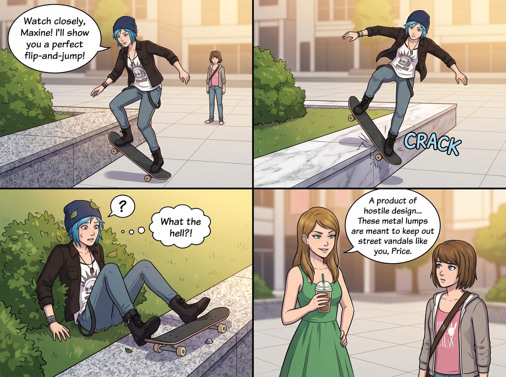

敵意建築

當這五個人在一個難得沒有下雨的下午，來到西雅圖市中心的某個高級公共廣場時，這場名為「敵意建築」的物理防禦系統，精準地對 Chloe 和 Max 發動了無差別攻擊。
一、街頭霸王的物理吃癟
Chloe 遠遠地就盯上了廣場邊緣那排完美的、甚至還打著蠟的花崗岩大理石邊緣。
「看好了，Maxine！看我給妳表演一個完美的尖翻接豚跳滑行！」
Chloe 興奮地踩著滑板，加速、起跳，滑板精準地落在大理石邊緣上。然而，就在她準備順著邊緣滑行摩擦的瞬間，滑板底盤傳來一聲令人牙酸的「喀啦」金屬撞擊聲。巨大的反作用力直接讓滑板卡死，Chloe 整個人像被看不見的絆馬索絆倒一樣，在空中手舞足蹈了半秒，最後極其狼狽地摔進了旁邊的灌木叢裡。
「什麼鬼東西？！」Chloe 滿頭樹葉地爬起來，定睛一看，才發現那排完美的大理石邊緣上，每隔兩英尺就被死死地釘上了一塊金屬防滑釘。
「敵意設計的產物，用來阻止滑板的物理補丁。」Victoria 站在一旁，優雅地喝著冷萃咖啡，「這些金屬疙瘩就是為了防妳這種街頭破壞分子的，Price。這是周邊商辦大樓的『防禦性空間』。」
二、攝影師的脊椎酷刑
另一邊，Max 對滑板不感興趣。她走了一下午，只想找個長椅躺平，把相機放在肚子上，安靜地發呆看雲。
她看到了一張造型極具現代感的長椅。但當她試圖躺下時，卻發現這張長椅每隔一段距離就有一個焊死的金屬扶手。Max 退而求其次，決定只用坐的。但當她坐下後，才發現椅面是一個詭異的傾斜弧度，而且材質極其冰冷滑溜。不到五分鐘，她就覺得自己的腰椎和尾椎正在發出抗議。
「這張椅子……好像很恨我。」Max 痛苦地揉著腰站了起來，「這不是給人休息的，這是一張逼你趕快滾蛋的刑具。」
「傳說中的敵意長椅變體。」Victoria 繼續她的冷酷解說，「看起來像家具，實際上經過精密的工程計算，防止流浪漢睡覺、防止滑板、甚至防止你坐得太久。雖然我也覺得這椅子醜得令人髮指，但它確實成功地維持了這裡的地產價值。」
三、意外的串聯
「資本主義反人類的破銅爛鐵！」Chloe 氣得踢了一腳長椅，轉頭看向正在一旁安靜記錄的 Lily，「Lily！妳能不能查查這破玩意兒的排放標準？我們把它們告到拆除！」
Lily 推了推圓框眼鏡，眼神中閃過一絲冰冷的數據光芒。
「Price 學姐，這種設計是為了排斥流浪漢和滑板青年，但他們犯了一個傲慢的行政錯誤——這些密集扶手與防滑釘的位置，恰好侵犯了《美國殘疾人法案》關於公共座位無障礙轉移空間、以及輪椅通行安全的強制標準。他們為了防滑板和流浪漢，卻把這裡變成了一個對輪椅族群充滿敵意的違章建築。」
Lily 沒有花太久時間，只是打開電腦，附上幾張現場測量照片，向相關單位提交了一份加急投訴。
「所以？」Chloe 眼睛一亮。
「一旦涉及無障礙法規違規，市政廳面臨的就不是普通的民事糾紛，而是聯邦級別的調查了。」Lily 輕描淡寫地說道。
坐在輪椅通道另一側、正在給一隻流浪狗餵食的 Kate，溫柔地站了起來，看著那些冰冷的金屬釘和傾斜的長椅，眼中閃過一抹悲憫：「真的好悲哀呢。城市花納稅人的錢，不是為了讓疲憊的人有地方休息，而是發明這些冰冷的機器來驅趕他們。」她輕聲補了一句：「《箴言》裡說，欺壓貧寒的，是辱沒造他的主；憐憫窮乏的，乃是尊敬主。」
四、兩週後
當小分隊再次路過這個廣場時，幾名穿著反光背心的市政工人正滿頭大汗地拿著電鑽，把那些大理石邊緣的金屬釘一個個拆下來，而原本那些傾斜、帶著密集扶手的敵意長椅，也被統一換成了平坦、寬敞的傳統木質長椅。
Chloe 興奮地吹了一聲口哨，踩上滑板，在大理石邊緣上拉出了一道完美的、沒有任何阻礙的金屬摩擦聲。
Max 則如願以償地躺在平坦的長椅上，將相機放在肚子上，聽著樹葉的沙沙聲，看著西雅圖湛藍的天空。
而在不遠處的咖啡座上，Victoria 看著報紙上「市中心廣場涉嫌違反無障礙法規面臨聯邦調查，物業連夜整改」的新聞，默默地喝了一口咖啡。她再次確信了一個真理：在這個世界上，任何反人類的設計，都敵不過二號車廂那種把法規當成精準打擊武器的行政黑魔法——這一次，順帶也讓一群素未謀面的輪椅使用者，過得輕鬆了一點。